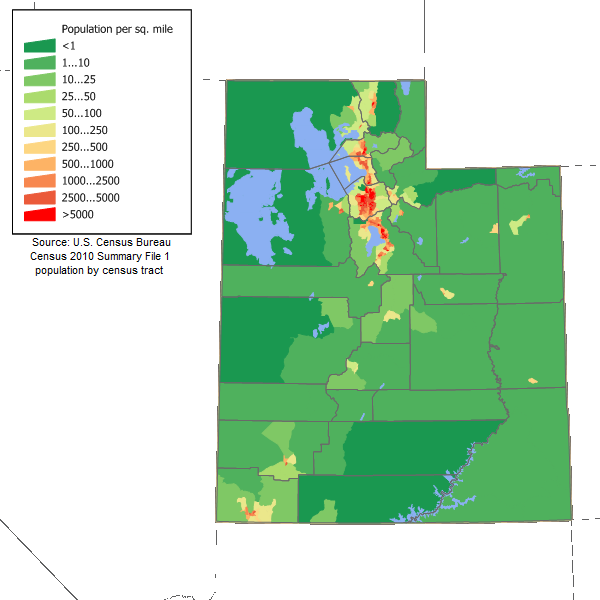

To be implemented: A search that changes the map to location and changes map type
To be implemented: a table that stores the data of previous searches
Saved searches
| Search # | Service | State | City | Population | Heat | Oldest data |
|---|---|---|---|---|---|---|
| example | insert service here | Utah | Provo | 114,527 | N/A | Data: date |
To be implemented: interactive map that uses websockets due to large amounts of different types of data that changes as they interact with the map plus data updates as they come

image found at Wikipedia commons: https://commons.wikimedia.org/wiki/File:Utah_population_map.png